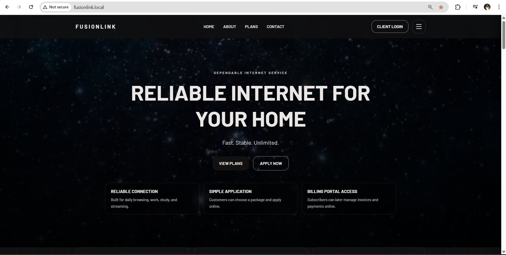
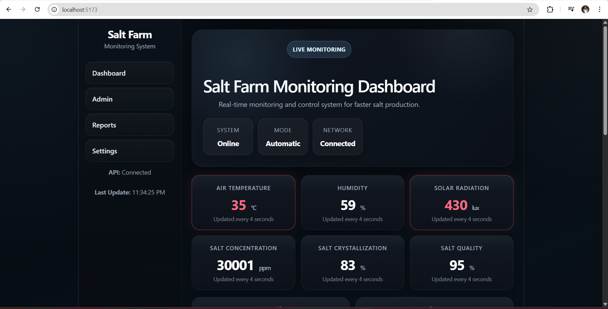
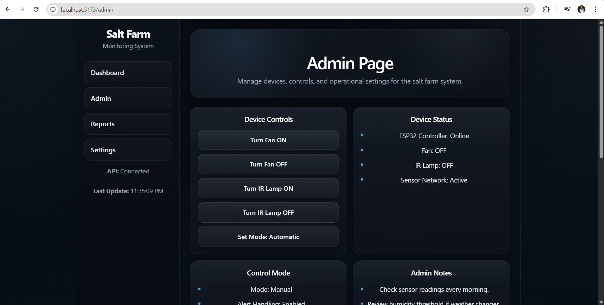

Projects
These projects demonstrate my ability to design, build, and improve real-world systems. I focus on solving practical problems, integrating multiple technologies, and creating useful interfaces for both administrators and end users.
 Click to zoom
Click to zoom

Click to zoomA full-stack OJT project for billing, customer management, content control, and customer service workflows.
During my On-the-Job Training, I developed a web-based ISP Billing System integrated with a Content Management System and a customer-facing website. The system was designed to streamline customer management, billing operations, service applications, and website content updates in one connected platform.
It includes customer and subscription management, invoice generation, payment tracking, reporting, role-based access, and monitoring features. The CMS allows administrators to manage website content dynamically without editing code, making the platform easier to update and maintain.
This project gave me hands-on experience in full-stack development, deployment, database handling, debugging, and solving real-world system integration issues in a working environment.
My Role
- Designed and developed the system structure for admin workflows and customer-facing pages.
- Built frontend and backend features using PHP, MySQL, HTML, CSS, and JavaScript.
- Implemented customer management, billing, invoice, payment, and CMS-related functions.
- Configured and deployed the system in a Linux (Ubuntu) environment using Apache.
- Improved usability, fixed issues, and maintained the system during development and testing.
Challenges & Solutions
- Resolved database connection issues and fixed missing or incorrect table/data problems.
- Handled Apache routing and server-related issues during setup and deployment.
- Worked through real-world debugging scenarios involving crashes, routing failures, and system errors.
- Improved performance by debugging existing code and optimizing workflows.

Click to zoom
Click to zoomReal-time monitoring dashboard with sensor-based insights, device control, and production estimation.
This project is a web-based dashboard designed to monitor and estimate salt production in real time. It integrates sensor data with an interactive user interface to provide insights into environmental conditions and production output.
The system displays live data such as salinity, temperature, humidity, solar radiation, water level conditions, and crystallization-related values through dynamic dashboard components, helping users track the salt production process more effectively.
It also includes an admin control interface where operators can manage devices, control operating modes, monitor device status, and support system actions for better farm monitoring and decision-making.
The goal of the system is to improve efficiency, support better decisions, and provide users with a clear preview of environmental and operational conditions before and during production.
My Role
- Designed the dashboard layout for real-time environmental monitoring.
- Integrated sensor-based data into a responsive monitoring interface.
- Built status displays for temperature, humidity, radiation, concentration, and crystallization indicators.
- Created an admin page for device controls, mode management, and monitoring support.
- Focused on making the system easier to understand and use for operational decisions.
Challenges & Solutions
- Organized multiple live data readings into a clean dashboard without overwhelming the user.
- Balanced monitoring information and control features across dashboard and admin views.
- Improved usability by separating system status, environmental readings, and device controls clearly.
- Designed the interface to support faster monitoring and easier decision-making during production.